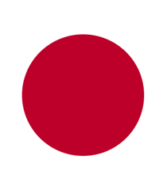
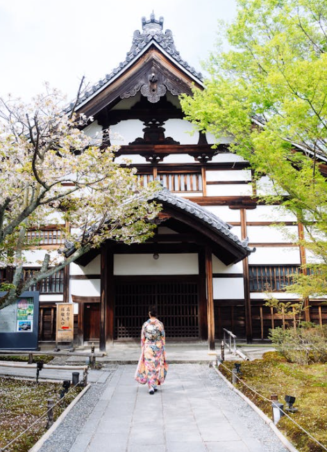

Hamamatsu
799.295 Resident
Japan
34°42′39″N 137°43′39″E


Get More Information

Tokyo
View all citiesHamamatsu is a coastal city in Honshu, Japan's main island. The Nakatajima Sand Dunes, a breeding ground for loggerhead turtles, fringe the coastline. Near the Act Tower skyscraper, designed to resemble a harmonica, are the global exhibits of the Hamamatsu Museum of Musical Instruments. The reconstructed 16th-century Hamamatsu Castle has more than 400 cherry trees and an observatory with Pacific Ocean views.
Images Credit
Bandung
Asia Africa
City Network
Quick Link
Get in touch
Need Information?
+62 81318667479
bapperida@bandung.go.id
© BAACN - All rights reserved